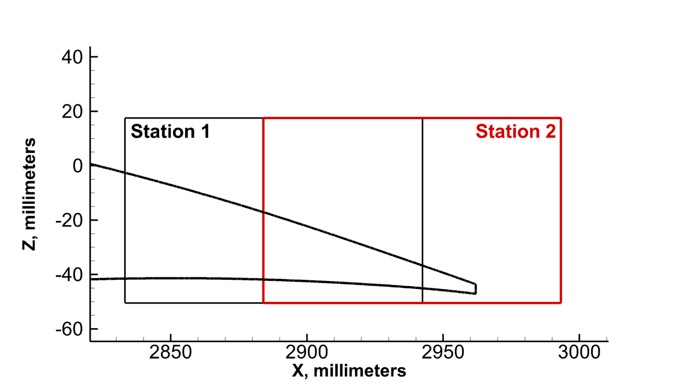

|
Public Access (formerly Langley Research Center)Turbulence Modeling Resource |
Exp: NASA Juncture Flow (JF) - Preliminary PIV Data
Return to: Exp: NASA Juncture Flow - Experimental Data
Return to: Exp: NASA Juncture Flow - Intro Page Return to: Data from Experiments - Intro Page Return to: Turbulence Modeling Resource Home PageShown below are time-resolved PIV data from Test 640
(mp4 format) of u-velocity in the plane y=-241.1mm, cutting through the corner separation.
The purpose here is to show the unsteadiness of the separated flow.
The PIV are 2-D, and the movies are made up of instantaneous frames with image acquisition
rate of 742 Hz.
(From T640, 5 degree angle of incidence.)
Some details can be found in:
AIAA-2019-0078.

Station 1:
Station 2:
Download Videos:
"R143y05mm-2_100frames.mp4",
"R144y05mm_100frames.mp4"
Return to: Exp: NASA Juncture Flow - Experimental Data
Recent significant updates:
11/07/2019 - added link to AIAA-2019-0078
Page Curators: Christopher Rumsey,
Ethan Vogel,
Clark Pederson
Last Updated: 11/18/2020